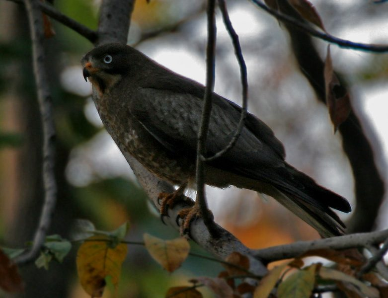

तीसाWhite-eyed Buzzard
Butastur teesa · Accipitridae · BRD-0045

- Scientific name
- Butastur teesa (Franklin, 1831)
- Family
- Accipitridae
- Hindi
- तीसा
- Status here
- native
- IUCN
- LC
When to look कब देखें
Present all year.
तीसा / White-eyed Buzzard
Butastur teesa (Franklin, 1831) — Accipitridae
तीसा (वाइट-आइड बज़ार्ड) — पूर्वी उत्तर प्रदेश के सूखे खुले जंगलों, झाड़ियों और कृषि क्षेत्रों में पाया जाने वाला एक मध्यम आकार का शिकारी पक्षी (raptor) है। इसके नाम में 'बज़ार्ड' होने के बावजूद, यह वास्तविक बज़ार्ड (Buteo) नहीं है। इसकी सबसे बड़ी पहचान इसकी चमकीली सफ़ेद आँखें (diagnostic white eyes), सफ़ेद गला जिस पर दो स्पष्ट काली मूंछ जैसी धारियां (moustachial stripes) होती हैं, और इसकी नारंगी-भूरी (rufous) पूंछ है। यह पक्षी अक्सर खेतों के किनारे बिजली के खंभों, लकड़ी के बाड़ों या सूखे पेड़ों पर शांत बैठकर शिकार की तलाश करता है। जब इसे कोई शिकार दिखता है, तो यह ऊपर से नीचे की ओर सीधे झपट्टा (drop-swooping) मारता है। यह फसलों को नुकसान पहुंचाने वाले कीड़ों, टिड्डों और चूहों को खाकर किसानों की मदद करता है।
Quick Identification त्वरित पहचान
| Feature | Description |
|---|---|
| Size | Medium-sized raptor (36–43 cm total length); slender build with relatively long tail |
| Eyes | Diagnostic staring white or pale yellowish-white irises in adults |
| Throat | Distinct white throat with a dark central stripe and two dark moustachial stripes framing it |
| Colouration | Greyish-brown upperparts; rufous-orange upper tail-coverts and tail; brown-and-white barred underparts |
| Bare Parts | Orange-yellow cere, gape, legs, and feet; bill is black-tipped with an orange base |
| Perch | Typically sits upright on exposed perches like posts, fences, or telegraph poles |
Field tip: Look for them sitting conspicuously on fence posts or electric poles along roadsides in agricultural areas. Their white eyes and white throat with dark stripes are visible even from a distance. The female is slightly larger than the male and is shown in the field tip.
Morphology आकारिकी
Biometrics (typical measurements in the northern Indian plains showing reverse sexual size dimorphism):
| Measurement | Range |
|---|---|
| Total length (Male) | 360–400 mm |
| Total length (Female) | 400–430 mm |
| Wing (Male) | 275–300 mm |
| Wing (Female) | 290–315 mm |
| Tail (Male) | 150–165 mm |
| Tail (Female) | 160–175 mm |
| Tarsus (Male) | 48–53 mm |
| Tarsus (Female) | 51–56 mm |
| Bill (Male) | 28–32 mm |
| Bill (Female) | 30–34 mm |
| Weight (Male) | 325–375 g |
| Weight (Female) | 375–425 g |
Plumage: The crown and mantle are dark brown with narrow, darker streaks. The upper wings are brownish with white spots, and a distinct whitish patch is present on the nape. The rump and tail are rufous-brown. The underparts are pale brown, heavily barred and mottled with white on the breast and belly. The chin and throat are white, divided by a prominent black line down the center and framed by dark brown stripes on either side of the jaw.
Bare parts: The adult irises are pale white or yellowish-white (brown in juveniles). The cere, gape, and base of the bill are bright orange-yellow; the tip of the bill is black. The legs and feet are orange-yellow with black talons.
Vocalisations
White-eyed Buzzards are noisy, especially when breeding or territory-marking.
- Contact and perch call: A high-pitched, mewing whistle, pee-wee or pi-weeer, repeated several times from an exposed perch.
- Alarm call: A sharp, rapid, screaming kip-kip-kip-kip, uttered when larger eagles or human intruders approach its nest tree.
Behaviour & Ecology व्यवहार और पारिस्थितिकी
- Hunting style: Primarily a "swoop hunter." It sits patiently on a prominent branch, electric line, or fence post, scanning the ground. Upon sighting prey, it drops down at an angle to seize the victim in its claws.
- Social behaviour: Usually solitary or in pairs. They are less aggressive than Shikras but will defend their immediate nesting areas from crows.
- Flight pattern: Flight consists of slow, heavy wingbeats alternating with brief glides. They do not hover.
Life Cycle / Phenology जीवन चक्र
- Breeding season: February to May in northern India.
- Nesting: Builds a neat, cup-shaped nest of thin twigs, lined with green leaves and fine straw.
- Nest site: Constructed in the fork of a tall leafy tree, such as Mango (Mangifera indica), Neem (Azadirachta indica), or Siris (Albizia lebbeck), often at a height of 8 to 15 metres.
- Clutch size: 2 to 3 eggs, greenish-white in colour, sometimes unmarked or faintly spotted with red.
- Incubation: About 28–30 days, shared by both parents, though the female performs the majority.
- Fledging: Nestlings are fed by both parents. They fledge in about 35–40 days and remain dependent on the parents for food for several weeks.
Host Plants or Prey आहार
Primary food items:
- Insects: Large grasshoppers, locusts, beetles, crickets, and termite alates.
- Reptiles: Garden lizards (Calotes versicolor), small skinks, and small snakes.
- Amphibians: Grass frogs (Fejervarya limnocharis) and young toads.
- Mammals: Small field mice and shrews.
Predators / Natural Enemies शत्रु
- Larger raptors: Black Kites (Milvus migrans) and eagle-owls prey on fledglings and eggs.
- Corvids: House Crows (Corvus splendens) aggressively mob perched buzzards and attempt to steal eggs from their nests.
- Mammals: Common Palm Civets (Paradoxurus hermaphroditus) may raid nests at night.
Agricultural / Human Relevance कृषि प्रासंगिकता
Beneficial predator. The White-eyed Buzzard is a highly beneficial bird for Basti's agricultural landscape, preying on destructive grasshoppers, crop beetles, and field rodents.
Conservation and legal status: Protected under Schedule IV of the Wildlife Protection Act, 1972. Habitat degradation through the removal of nesting trees and the excessive use of chemical pesticides are long-term conservation challenges for this species. Secondary poisoning via pesticide-laden grasshoppers is a threat.
Expected Locally स्थानीय रूप से अपेक्षित
Not a field record. Written from published accounts for eastern Uttar Pradesh. No confirmed local sighting yet — if you have seen it, that is what the atlas needs.
अभी तक स्थानीय पुष्टि नहीं। यह विवरण प्रकाशित स्रोतों से है, किसी अवलोकन से नहीं।
A fairly common resident in the dry agricultural zones of Basti district, especially along road edges and canal banks in the Harraiya and Khalilabad blocks. They are most commonly spotted sitting on fence posts or concrete boundary markers surrounding crop fields. Their distinct mewing calls are frequently heard during the morning hours from February to April.
Distribution वितरण
Global range: Endemic to the Indian Subcontinent and parts of adjacent Southeast Asia (Myanmar).
In India: Widespread resident in the dry plains, foothills, and dry deciduous zones, avoiding humid forest regions.
In Uttar Pradesh: A common resident in all dry plains and agricultural districts.
In Basti district / eastern UP: Regularly recorded in dry open scrublands and cultivation margins throughout the region.
Research Questions शोध प्रश्न
Anyone can investigate these | कोई भी इन प्रश्नों की जाँच कर सकता है
- How many minutes does a White-eyed Buzzard occupy a single perch before moving? — Document perch occupancy times in the mornings versus afternoons.
- What is the ratio of insect prey to vertebrate prey brought to nests in Basti? / बस्ती में घोंसलों में लाए जाने वाले शिकार में कीड़ों और रीढ़धारियों (छिपकली/चूहे) का अनुपात क्या है? — Observe and record prey items delivered by parents.
- Do White-eyed Buzzards prefer wooden fence posts over metal poles as hunting perches? — Count and compare perch selections in rural areas.
- How do White-eyed Buzzards react to the nesting calls of nearby Black-winged Kites? / तीसा अपने क्षेत्र में कपसी (ब्लैक-विंग्ड काइट) की मौजूदगी पर क्या प्रतिक्रिया देता है? — Document interspecific territorial boundaries.
- Does the abundance of perched buzzards increase along highway corridors during harvesting? — Perform road-transect surveys before and after crop harvest.
Similar Species मिलती-जुलती प्रजातियाँ
| Species | Key Difference | हिंदी |
|---|---|---|
| Shikra (Accipiter badius) | Smaller; barred underparts; yellow/orange eyes (not white); throat has a single central stripe | शिकरा — छोटा आकार, आड़ी धारियाँ, पीली आँखें |
| Black-winged Kite (Elanus caeruleus) | Distinct grey-and-white plumage; jet-black shoulder patches; bright red eyes; hovers in mid-air | कपसी — सफ़ेद-धूसर शरीर, काले कंधे, लाल आँखें |
| Black Kite (Milvus migrans) | Much larger; dark brown plumage; forked tail; lacks white eyes | चील — बड़ा आकार, गहरा भूरा शरीर, दो-शाखी पूँछ |
Field rule: Medium-sized brown-and-white raptor, conspicuous white eyes, white throat with black stripes, orange-yellow cere, sitting upright on a fence post is a White-eyed Buzzard.
Taxonomy & Classification वर्गीकरण
Original description. James Franklin described the White-eyed Buzzard as Circus teesa in 1831 in the Proceedings of the Committee of Science and Correspondence of the Zoological Society of London (Part 1, p. 115). The type locality was the Ganges between Calcutta and Benares. The genus name Butastur was created by Hodgson in 1843, combining Buteo (buzzard) and Astur (goshawk). The specific name teesa is derived from the Hindi name teesa (तीसा) for the bird.
Subspecies. Monotypic — no subspecies are currently recognised.
Family and order placement. Placed in the order Accipitriformes, family Accipitridae, subfamily Buteoninae (buzzards and eagles).
Phylogenetic notes. Despite its common name, genetic data places the genus Butastur closer to the snake-eagles (Circaetus) than to the true buzzards (Buteo).
IUCN status rationale. Listed as Least Concern (LC). Although its global population is believed to be in slow decline due to agricultural intensification and pesticide use, it does not yet meet the thresholds for a threatened category.
Photo Gallery फोटो गैलरी
References संदर्भ
- Franklin, J. (1831). Proceedings of the Committee of Science and Correspondence of the Zoological Society of London. Part 1, p. 115. [original description]
- Ali, S. & Ripley, S. D. (1999). Handbook of the Birds of India and Pakistan. Vol. 1. Oxford University Press, New Delhi.
- Grimmett, R., Inskipp, C. & Inskipp, T. (2011). Birds of the Indian Subcontinent. 2nd ed. Christopher Helm, London.
- Ferguson-Lees, J. & Christie, D. A. (2001). Raptors of the World. Christopher Helm, London.
- BirdLife International (2024). Butastur teesa. IUCN Red List of Threatened Species. Ver. 2024.
- GBIF Occurrence Data — Butastur teesa, Uttar Pradesh (2010–2025).
Source file: species/fauna/birds/white_eyed_buzzard.md